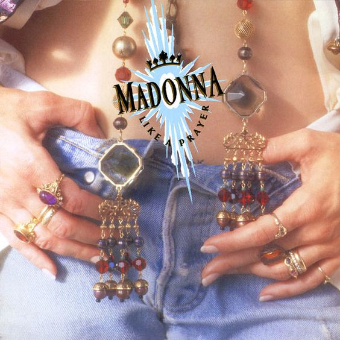

Top 5 Mejores Canciones Pop de la Historia
"Like a Prayer" - Madonna

Fecha de Publicación: 1989
Artista: Madonna
Reseña: Este éxito de Madonna, lanzado en 1989 como el título principal de su cuarto álbum de estudio, es una combinación perfecta de pop y temas controvertidos. Su mezcla de elementos religiosos y sexuales generó polémica en su momento, pero también contribuyó a su inmensa popularidad y a su lugar en la historia de la música pop.